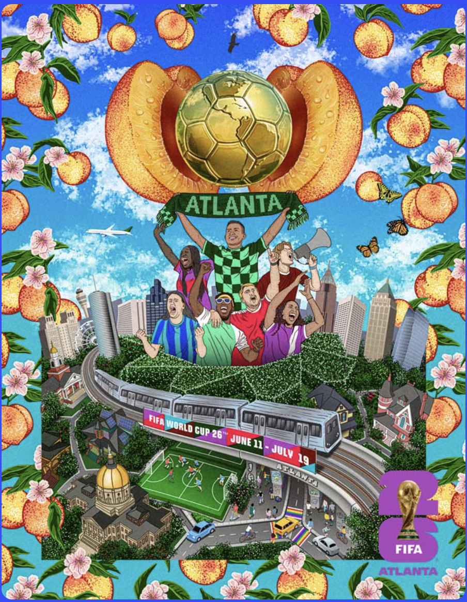

LISTEN LIVE
BROADCAST READY · ATL
Jazz Ting Radio is proposing a live cultural broadcast series built around every FIFA World Cup 2026 match hosted in Atlanta. Each event is a DJ set curated around the countries playing that day — pulling from traditional music, diaspora sounds, and contemporary club culture, blended into the Jazz Ting signature sound.
This isn't a watch party. It's a live broadcast + social event — filmed cinematically, streamed to YouTube, and clipped for social media. Atlanta has never had a World Cup before. Jazz Ting Radio is positioned to tell that story through sound.

Downtempo jazz, soul, and rare groove pulls from the featured countries. Warm the room. Build anticipation. Analog texture, conversation-friendly energy.
Amapiano, Afro-house, and global club rhythms that reflect the match energy. Crowd engaged, still conversational — heads nodding, not losing it. High musicality over aggressive drops.
High-energy mashups. Cross-cultural blends that close the loop — Brazilian samba into house, UK jazz into amapiano, Argentine tango samples flipped into club. The moment the room becomes the broadcast.
Every set is built around the countries playing that day — drawing from traditional music, contemporary club sounds, and diaspora connections, then blended into the Jazz Ting signature groove.
Seamless blending across genres. Unexpected mashups — jazz samples over club rhythms. Warm analog texture. Groove-first, head-nod energy. High musicality over aggressive EDM-style drops.
Jazz Ting Radio operates from a professional broadcast studio in Atlanta with direct line-of-sight to Mercedes-Benz Stadium — a 2026 FIFA World Cup venue. Floor-to-ceiling windows. Analog equipment visible. Intimate but production-ready.
Six years of live all-vinyl broadcasts. A proven YouTube streaming setup. A visual identity that is cinematic by nature — not club chaos, but intentional framing and storytelling through sound.

In summer 2026, the world comes to Atlanta. Jazz Ting Radio is broadcast-ready, stadium-adjacent, and built to be the cultural soundtrack of Atlanta's World Cup moment — a live destination for music, sport, and global identity.
This is a pilot for Jazz Ting Café — a future permanent venue concept rooted in the same cultural vision.
Get In TouchJazz Ting Radio is seeking World Cup 2026 partners — sponsors, media companies, venue operators, cultural organizations, and brands looking to connect with Atlanta's global audience through music, sport, and live production.